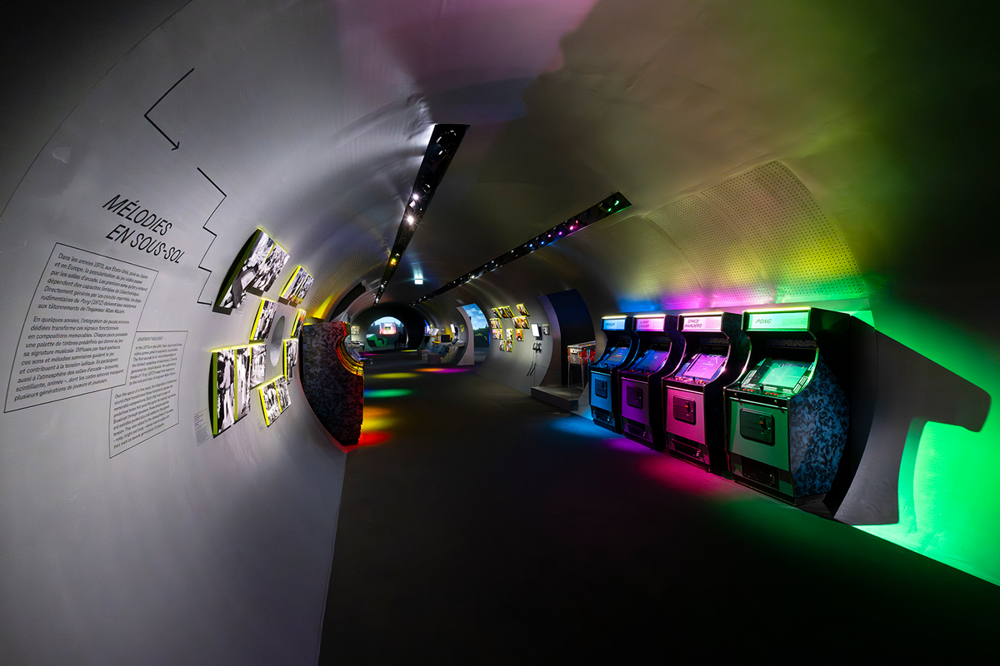
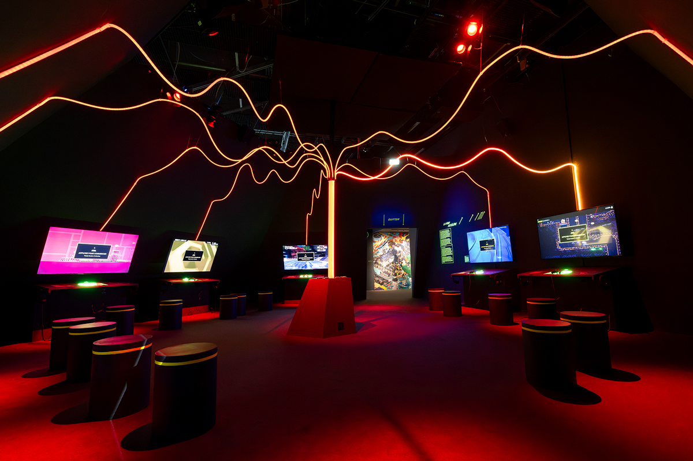

Exposition • Espace d’exposition — Philharmonie
Réservation indispensable avant toute visite
Des premiers sons 8 bits aux orchestres symphoniques, découvrez les liens entre musique et jeu vidéo.
Un parcours conçu comme un monde ouvert : stations interactives, consoles, instruments et une vingtaine de jeux jouables. Le visiteur choisit sa progression et explore une musique qui se joue autant qu’elle s’écoute.

Commissariat
Fanny Rebillard et Jean Zeid
Scénographie
La Sagna & Racine
Accessibilité de l’exposition
Des effets lumineux peuvent affecter les personnes photosensibles. Certains jeux restent liés à leurs manettes d’origine. Consultez les informations complètes avant votre visite.
Informations officielles ↗
Playlist
Prolongez l’exposition avec sa sélection officielle de musiques de jeux vidéo.
Écouter la playlist officielle ↗Ouvre les plateformes musicales ; aucun son automatique.